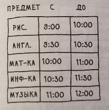
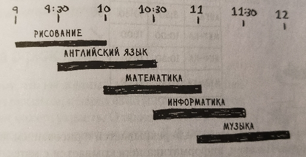
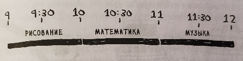

1. Задача составления расписания.
Условие:
Есть уроки, которые можно провести, но только в определённое время. И есть учебный класс. Нужно провести в классе как можно больше уроков.


Алгоритм для решения задачи на удивление прост:
1. Нужно выбрать урок, завершающийся раньше всех. Это первый урок, который будет проведён в классе.
2. Затем выбирается урок, начинающийся после завершения первого урока. И снова следует выбрать урок, который завершается раньше всех остальных. Он становится вторым уроком в расписании.
3. Повторение 2-го пункта и т.д.
Ответ:

Код:
import copy
"""ФУНКЦИЯ ПРОВЕРКИ ОКОНЧАНИЯ ЦИКЛА."""
def function_check():
temp = False
for i in lessons_mod.values():
if i[0] >= result[-1][-1][-1]:
temp = True
break
return temp
"""ВХОДНЫЕ ДАННЫЕ. ХЕШ-ТАБЛИЦА для всех уроков."""
lessons = {
"Рисование": ("8:00","10:00"),
"Английский язык": ("8:30","10:30"),
"Математика": ("10:00","11:00"),
"Информатика": ("10:30","11:30"),
"Музыка": ("11:00","12:00")
}
"""ОСНОВНОЙ КОД."""
#######################################
# приведём данные к удобному виду
lessons_mod = {}
for lesson, schedule in lessons.items():
lessons_mod[lesson] = [float(schedule[0].replace(":",".")), float(schedule[1].replace(":","."))]
# ПОЛУЧИЛОСЬ: lessons_mod {'Рисование': [8.0, 10.0], 'Английский язык': [8.3, 10.3], 'Математика': [10.0, 11.0], 'Информатика': [10.3, 11.3], 'Музыка': [11.0, 12.0]}
#######################################
"""ОПРЕДЕЛЕНИЕ ПЕРВОГО УРОКА."""
a = min(dict(lessons_mod.values()).values()) # самое раннее время окончания первого урока из всех возможных
result = [[x, y] for x, y in lessons_mod.items() if y[-1] == a] # результат с первым уроком, который будет дополняться далее --> [['Рисование', [8.0, 10.0]]]
"""ОСНОВНОЙ ЦИКЛ."""
#######################################
while function_check():
for i in result: # в цикле убрать уроки, который стали определены в result из lesson_mod
if i[0] in lessons_mod:
del lessons_mod[i[0]]
temp = copy.copy(lessons_mod)
for a, b in temp.items(): # в цикле убрать предметы, которые не подходят
if b[0] < result[-1][-1][-1]:
del lessons_mod[a]
a = min(dict(lessons_mod.values()).values()) # самое раннее время окончания следующего урока из всех возможных
for x, y in lessons_mod.items():
if y[-1] == a:
result.append([x, y])
#######################################
"""ПРИВЕДЁМ КОНЕЧНЫЙ РЕЗУЛЬТАТ К БОЛЕЕ КРАСИВОМУ ВИДУ."""
# сначала приведём переменнуя result к виду --> {'Рисование': '8:0-10:0', 'Математика': '10:0-11:0', 'Музыка': '11:0-12:0'}
result = dict(result)
temp = copy.copy(result)
for a, b in temp.items():
temp_str = ""
for i in b:
temp_str += (str(i).replace(".",":") + "-")
result[a] = temp_str[:-1]
# выведем на экран расписание уроков
print()
for a, b in result.items():
print(f"Урок: {a:>10}, Время: {b:>9}")
print()